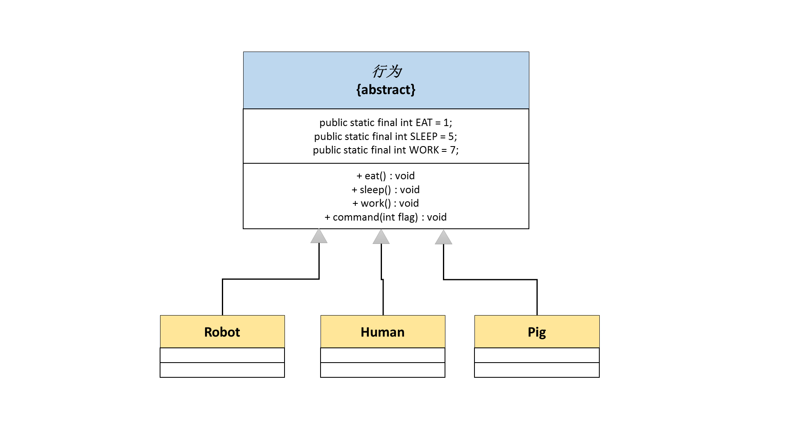

抽象类的定义及使用
1、抽象类的定义语法；
2、抽象类的使用限制；
3、抽象类的实际应用。
抽象类
普通类可以直接产生实例化对象，并且在普通类之中可以包含有构造方法、普通方法、static方法、常量、变量等内容。而所谓的抽象类就是指增加了抽象方法的普通类。
所有的普通方法上都会有一个“{}”，表示方法体，有方法体的方法可以被对象直接使用。而抽象方法指得是没有方法体的方法，同时抽象方法必须使用abstract关键字进行定义。
拥有抽象方法的类一定属于抽象类，抽象类要使用abstract声明。
范例： 定义抽象类
abstract class A { // 定义一个抽象类
public void fun() { // 普通方法
System.out.println("存在方法体的方法！");
}
// 此方法并没有方法体的声明，并存在abstract关键字，表示抽象方法
public abstract void print();
}
既然定义好了抽象类，那么下面使用这个抽象类。
范例： 直接实例化对象？？？？？
public class MainClass {
public static void main(String[] args) {
A a = new A(); // A是抽象的，无法实例化
a.fun();
a.print();
}
}
这个时候发现根本就不能直接实例化A类对象。之所以不能实例化的原因：当一个类的对象实例化之后，就意味着这个对象可以调用类中的属性或者方法，但是在抽象类中存在有抽象方法，抽象方法没有方法体，无法进行调用。
对于抽象类的使用原则如下：
- 抽象类必须有子类，即：每一个抽象类一定要被子类所继承；
- 抽象类的子类（如果该子类不是抽象类）必须要覆写抽象类之中的全部抽象方法（强制子类覆写）；
- 抽象类的对象实例化需要依靠子类完成，采用向上转型的方式处理。
范例： 正确使用抽象类
abstract class A { // 定义一个抽象类
public void fun() { // 普通方法
System.out.println("存在方法体的方法！");
}
// 此方法并没有方法体的声明，并存在abstract关键字，表示抽象方法
public abstract void print();
}
// 一个子类只能够继承一个抽象类，属于单继承
class B extends A { // B类是抽象类的子类，并且是一个普通类
public void print() { // 强制要求覆写
System.out.println("Hello World");
}
}
public class MainClass {
public static void main(String[] args) {
A a = new B(); // 向上转型
a.fun();
a.print();
}
}
总结
1、抽象类继承子类里面会有明确的方法覆写要求，而普通类并没有；
2、抽象类只比普通方法多了一些抽象方法的定义，其他的组成部分与普通类完全一样；
3、普通类对象可以直接实例化，但是抽象类的对象必须经过向上转型之后才可以得到实例化对象。
虽然一个子类可以去继承任意的一个普通类，可是从开发的实际要求来讲，普通类不要去继承另一个普通类，而只能继承抽象类。
抽象类的相关限制
抽象类的组成和普通类的区别不大，但是由于有一点点使用以及定义上的区别，所以会有以下的概念可能会被忽略：
1、由于抽象类里面存在有属性，那么抽象类之中一定有构造方法，目的：初始化属性。子类调用的时候依然满足先执行父类构造再执行子类构造；
2、抽象类不能够使用final定义，因为抽象类必须由子类，而final定义的类不能够有子类；
3、外部的抽象类不允许使用static声明，而内部抽象类允许使用static声明，使用static声明的内部抽象类就相当于一个外部抽象类，继承的时候使用“外部类.内部类”的形式表示类名称。
abstract class A { // 定义一个抽象类
// static定义的内部类属于外部类
static abstract class B {
public abstract void print();
}
}
class X extends A.B {
public void print() {
System.out.println("Hello World");
}
}
public class MainClass {
public static void main(String[] args) {
A.B ab = new X(); // 向上造型
ab.print();
}
}
4、任何情况下，如果要执行类中的static方法，都可以在没有类实例对象的时候直接调用，对于抽象类也是一样。
abstract class A { // 定义一个抽象类
public static void print() {
System.out.println("Hello World");
}
}
public class MainClass {
public static void main(String[] args) {
A.print();
}
}
5、有些时候，由于抽象类只需要一个特定的系统操作，所以可以忽略掉外部子类。
abstract class A { // 定义一个抽象类
public abstract void print();
private static class B extends A { // 内部抽象类实现类
public void print() { // 覆写抽象类的方法
System.out.println("Hello World");
}
}
// 这个方法不受治理化对象的控制
public static A getInstance() {
return new B();
}
}
public class MainClass {
public static void main(String[] args) {
// 此时取得A类实例化对象的时候完全不需要知道B类的存在
A a = A.getInstance();
a.print();
}
}
这样的设计在系统类库之中会比较常见，目的：为用户隐藏不需要知道的子类。
对于之前有一个遗留的问题，下面来看一段代码，分析执行的结果。
abstract class A {
public A() { // 2、父类构造方法
this.print(); // 3、调用方法
}
public abstract void print();
}
class B extends A {
private int num = 100;
public B(int num) {
this.num = num;
}
public void print() { // 4、调用覆写后的方法
// num还没初始化，内容是其对应类型的默认值
System.out.println("num=" + num);
}
}
public class MainClass {
public static void main(String[] args) {
new B(100); // 1、执行构造
}
}
解决思路：在任何一个类的构造执行完之前，所有属性的内容都是其对应数据类型的默认值，而子类构造执行之前一定先执行父类构造，那么此时子类构造没有执行，所以num就是0。
抽象类应用 —— 模板设计
例如，现在有三类事务：
- 机器人：充电、工作；
- 人：吃饭、工作、睡觉；
- 猪：吃饭、睡觉。
要求可以实现以上的操作控制，即：可以实现任意的控制人、机器人、猪的操作行为。

范例： 定义的是一个行为类
abstract class Action {
public static final int EAT = 1;
public static final int SLEEP = 5;
public static final int WORK = 7;
public void command(int flag) {
switch (flag) {
case EAT:
this.eat();
break;
case SLEEP:
this.sleep();
break;
case WORK:
this.work();
break;
case EAT + WORK:
this.eat();
this.work();
break;
}
}
public abstract void eat();
public abstract void sleep();
public abstract void work();
}
范例： 定义机器人的类
class Robot extends Action {
public void eat() {
System.out.println("机器人补充能量！");
}
public void sleep() {
}
public void work() {
System.out.println("机器人正在工作！");
}
}
范例： 定义人的类
class Human extends Action {
public void eat() {
System.out.println("人类正在吃饭！");
}
public void sleep() {
System.out.println("人类正在休息！");
}
public void work() {
System.out.println("人类正在工作！");
}
}
范例： 定义猪的类
class Pig extends Action {
public void eat() {
System.out.println("猪在吃饭！");
}
public void sleep() {
System.out.println("猪在睡觉！");
}
public void work() {}
}
这三个都属于行为的子类，所以都可以通过行为来控制。
public class MainClass {
public static void main(String[] args) {
fun(new Robot());
fun(new Human());
fun(new Pig());
}
public static void fun(Action action) {
action.command(Action.EAT);
action.command(Action.SLEEP);
action.command(Action.WORK);
}
}
这些不同的类型最终都在行为上成功的进行了抽象，即：如果想要使用行为操作，那么就必须按照Action类的标准来实现子类。
总结
1、如果要使用类继承那么就使用抽象类；
2、抽象类强制规定了子类必须要做的事情，而且可以与抽象类的普通方法相配合；
3、不管抽象类如何努力都有一个天生最大的问题：单继承局限。